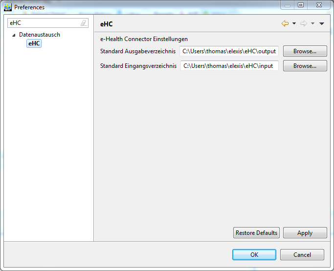
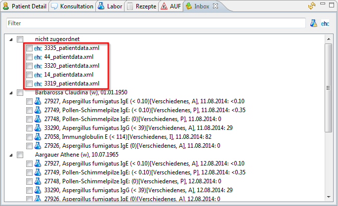
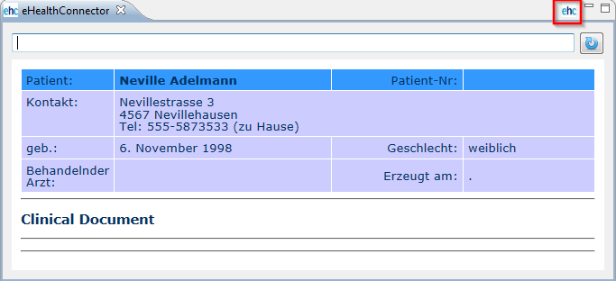
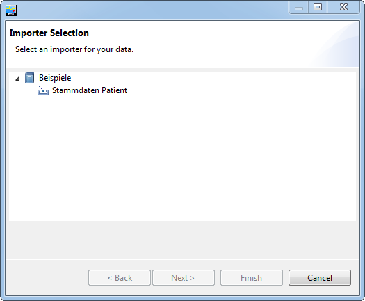
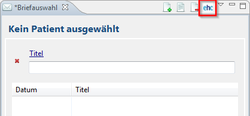
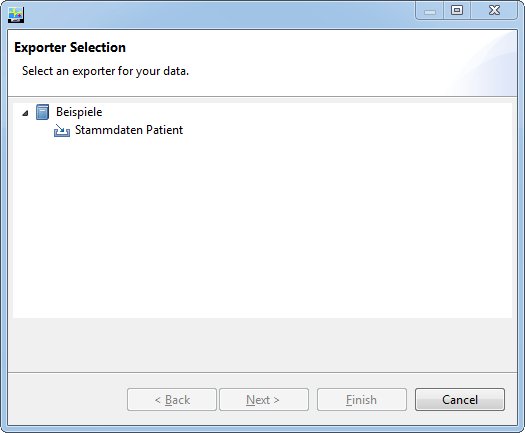

At.medevit.elexis.ehc.feature.feature.group
| Version: | |
| Kategorie: | Datenaustausch |
| Beschreibung: | Import, Export und Ansicht von e Health Dokumenten |
| Author: | Thomas Huster |
| Letzte Bearbeitung: | 19.08.2014 |
| Voraussetzungen: | Elexis 3.0 |
| Betriebssystem: | Windows, Mac, Linux |
| Lizenz: | Eclipse Public License (EPL) |
Contents
Einführung
Das Feature bietet die Grundlage um e Health Dokumente zu erzeugen und wieder einzulesen. Dabei wird die ebenfalls unter der EPL verfügbare Bibliothek eHealthConnector verwendet.
Installation / Deinstallation
Medelexis-Benutzer können über das Service-Abo installieren oder deinstallieren. OpenSource-Benutzer können das Feature über 'Hilfe' im Menü erreichen (siehe Installation Elexis 3.0 OpenSource)
Konfiguration
Es können Verzeichnisse für Dokumenten Ein- bzw. Ausgang konfiguriert werden. 
Funktionen
Eingang von neuen e Health Dokumenten
 Das konfigurierte Eingangsverzeichnis wird ständig überwacht, und neue bzw. vorhandene Dokumente werde in der Inbox Ansicht (At.medevit.elexis.inbox.feature.feature.group) angezeigt.
Ansicht von e Health Dokumenten
 Durch Doppelklick auf ein Dokument in der Inbox Ansicht, wird dieses in der Anzeige Ansicht des e Health Connectors geöffnet. In der Ansicht kann im Textfeld auch eine URL zu einem externen Dokument welches angezeigt werden soll eingegeben werden. Ausserdem wird der Import von Daten aus dem angezeigten Dokument durch Klick auf den ehc Knopf gestartet.
Import von e Health Dokumenten
 Im Importer Dialog kann ein Importer ausgewählt werden. Dann wird über Klick auf Next der ausgewählte Importer konfiguriert, und via Finish ausgeführt. Zum jetzigen Zeitpunkt ist nur ein Beispiel Importer für Patientendaten Teil dieses Features.
Export von e Health Dokumenten
 Das Erzeugen neuer e Health Dokumente im Menu der Briefe Perspektive gestartet werden.  Im Exporter Dialog kann ein Exporter ausgewählt werden. Dann wird über Klick auf Next der ausgewählte Exporter konfiguriert, und via Finish ausgeführt. Zum jetzigen Zeitpunkt ist nur ein Beispiel Exporter für Patientendaten Teil dieses Features.